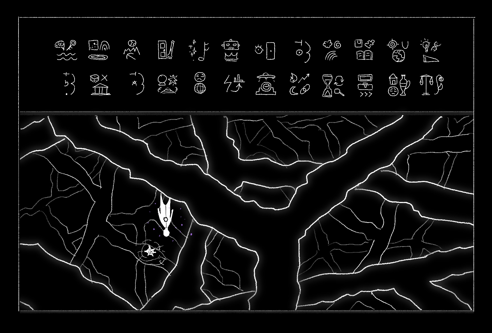
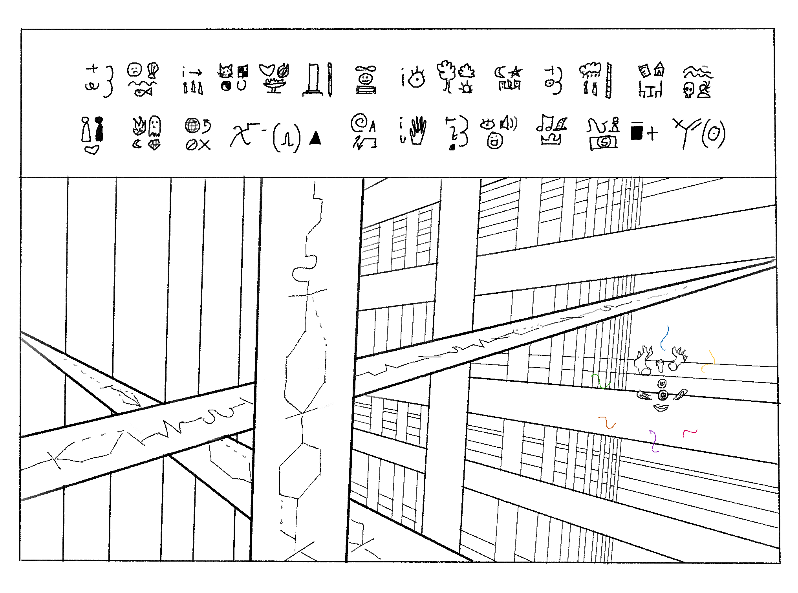
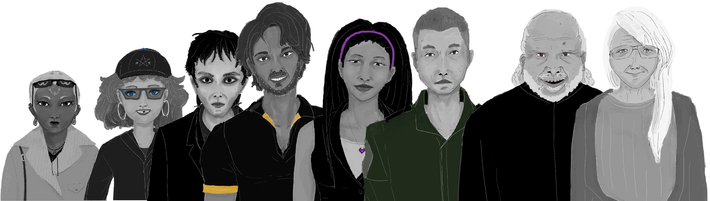

Dark Void
 Light Lattice
 Timeline Vignettes
=> "These are a collection of immersive philosophical short stories and essays that had helped me try to make sense of things. I sought to increase consciousness, but most of what I found is that at the base of all things are the necessary chaos and paradoxes that appear in every thought from the logic and language limits that we use as tools to understand the world, and I found it seems equally valuable to not be aware as well (it might be quite a nightmare it would be if animals gained a higher consciousness).
Even if we haven't met or could never meet each other in space, this is my way of reaching out to you through time. I hope my attempt at contributing in this form of art eases just a little the burden of existing on moments of feeling inaccessible and misunderstood."